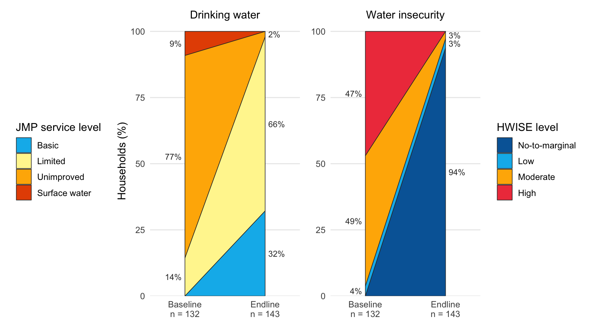

The goal of kalaiwash is to provide the baseline and endline household survey data of the KALAI water, sanitation and hygiene project of HELVETAS in Nampula Province, Mozambique. The project was funded by charity. Baseline data were collected in November 2024 and endline data in June 2025 in the districts of Larde, Memba, Moma and Mecuburi. The data describe drinking water sources classified with the WHO/UNICEF Joint Monitoring Programme (JMP) service ladder, and household water insecurity measured with the 12-item Household Water Insecurity Experiences (HWISE) Scale.
Installation
You can install the development version of kalaiwash from GitHub with:
# install.packages("devtools")
devtools::install_github("openwashdata/kalaiwash")Alternatively, you can download the individual datasets as a CSV or XLSX file from the table below.
- Click Download CSV. A window opens that displays the CSV in your browser.
- Right-click anywhere inside the window and select “Save Page As…”.
- Save the file in a folder of your choice.
| dataset | CSV | XLSX |
|---|---|---|
| kalaiwash | Download CSV | Download XLSX |
Data
The package provides access to one dataset.
kalaiwash
For an overview of the variable names, see the following table. The options column lists the levels of each categorical variable.
| variable_name | variable_type | description | options |
|---|---|---|---|
| survey_date | Date | Date of the interview | NA |
| survey_type | factor | Survey round: Baseline (November 2024) or Endline (June 2025) | Baseline; Endline |
| district | factor | District of Nampula Province where the household is located | Larde; Memba; Moma; Mecuburi |
| community | factor | Name of village | Cruzamento dos velhos; Jacagiua; Lusaka; Macuire; Matata; Miaja; Mieie; Monapo; Mpaheia; Namichir; Nanrele; Nihola; Valdemar |
| gender | factor | Whether the respondent is male or female | Female; Male |
| household_size | numeric | The number of people living and eating together in the household including the respondent | NA |
| source | factor | Household’s primary drinking water source | Borehole with handpump; Protected dug well; Protected dug well with handpump; Public tap or standpipe; Unprotected dug well; Unprotected spring; Surface water |
| jmp_improved | factor | If the Water source is “improved” or “unimproved” according to the JMP classification, derived from source: Improved for borehole with handpump, protected dug well (with or without handpump), public tap or standpipe, mechanized borehole, protected spring and piped water; Unimproved otherwise | Unimproved; Improved |
| jmp_water_service | factor | JMP drinking water service level derived from source and total_collect_time: Surface water; Unimproved (other unimproved source); Limited (improved source, total collection time over 30 minutes); Basic (improved source, total collection time of 30 minutes or less) | Surface water; Unimproved; Limited; Basic |
| collect_yesterday | factor | If anyone in the household collected drinking water yesterday | No; Yes |
| containers_25l | numeric | Number of 25 liter containers used to collect water yesterday | NA |
| containers_20l | numeric | Number of 20 liter containers used to collect water yesterday | NA |
| containers_15l | numeric | Number of 15 liter containers used to collect water yesterday | NA |
| containers_10l | numeric | Number of 10 liter containers used to collect water yesterday | NA |
| containers_5l | numeric | Number of 5 liter containers used to collect water yesterday | NA |
| oneway_travel | numeric | Estimate of how long household member had to walk to get to the water source in minutes (not round-trip) | NA |
| wait_time | numeric | The last time household member went to the source, estimate of how long to wait to collect water from the source in minutes | NA |
| total_collect_time | numeric | Total collection time in minutes: twice the one-way walk (oneway_travel) plus the wait time (wait_time) | NA |
| satisfied | factor | Whether the respondent is satisfied with the water service | Not Satisfied; Satisfied |
| notsatisfied_why | factor | Why not satisfied with your water service | It is broken; It is too expensive; It is too far away; Long lines; Other; Water has a bad smell, color, or quality; Water tastes bad |
| defecation_place | factor | The places that adult men and women in this household defecate | Latrine/toilet; In the open/no sanitation facilities; In water body: river or lake |
| handwash_demo | factor | Willing to show where and how handwashing happens | No; Yes |
| soap_ash | factor | Household demo uses soap or ash or another cleanser to wash hands | Soap; Ash; Other cleanser or detergent; None shown |
| water_wash | factor | Household demo uses water to wash hands | No; Yes |
| hwise_worry | ordered, factor | In the last 4 weeks, how frequently did you or anyone in your household worry you would not have enough water for all of your household needs? | Never (0 times); Rarely (1-2 times); Sometimes (3-10 times); Often (11-20 times); Always (more than 20 times) |
| hwise_interrupt | ordered, factor | In the last 4 weeks, how frequently has your main water source been interrupted or limited (e.g. water pressure, less water than expected, river dried up)? | Never (0 times); Rarely (1-2 times); Sometimes (3-10 times); Often (11-20 times); Always (more than 20 times) |
| hwise_clothes | ordered, factor | In the last 4 weeks, how frequently have problems with water meant that clothes could not be washed? | Never (0 times); Rarely (1-2 times); Sometimes (3-10 times); Often (11-20 times); Always (more than 20 times) |
| hwise_change_plans | ordered, factor | In the last 4 weeks, how frequently have you or anyone in your household had to change schedules or plans due to problems with your water situation? (e.g. caring for others, household chores, agricultural work, IGA, sleeping) | Never (0 times); Rarely (1-2 times); Sometimes (3-10 times); Often (11-20 times); Always (more than 20 times) |
| hwise_change_meal | ordered, factor | In the last 4 weeks, how frequently have you or anyone in your household had to change what was being eaten because there were problems with water (e.g., for washing foods, cooking, etc.)? | Never (0 times); Rarely (1-2 times); Sometimes (3-10 times); Often (11-20 times); Always (more than 20 times) |
| hwise_nohandwash | ordered, factor | In the last 4 weeks, how frequently have you or anyone in your household had to go without washing hands after dirty activities (e.g., defecating or changing diapers, cleaning animal dung) because of problems with water? | Never (0 times); Rarely (1-2 times); Sometimes (3-10 times); Often (11-20 times); Always (more than 20 times) |
| hwise_no_bodywash | ordered, factor | In the last 4 weeks, how frequently have you or anyone in your household had to go without washing their body because of problems with water (e.g., not enough water, dirty, unsafe)? | Never (0 times); Rarely (1-2 times); Sometimes (3-10 times); Often (11-20 times); Always (more than 20 times) |
| hwise_drinking | ordered, factor | In the last 4 weeks, how frequently has there not been as much water to drink as you would like for you or anyone in your household? | Never (0 times); Rarely (1-2 times); Sometimes (3-10 times); Often (11-20 times); Always (more than 20 times) |
| hwise_angry | ordered, factor | In the last 4 weeks, how frequently did you or anyone in your household feel angry about your water situation? | Never (0 times); Rarely (1-2 times); Sometimes (3-10 times); Often (11-20 times); Always (more than 20 times) |
| hwise_sleepthirsty | ordered, factor | In the last 4 weeks, how frequently have you or anyone in your household gone to sleep thirsty because there wasn’t any water to drink? | Never (0 times); Rarely (1-2 times); Sometimes (3-10 times); Often (11-20 times); Always (more than 20 times) |
| hwise_nowater | ordered, factor | In the last 4 weeks, how frequently has there been no useable or drinkable water whatsoever in your household? | Never (0 times); Rarely (1-2 times); Sometimes (3-10 times); Often (11-20 times); Always (more than 20 times) |
| hwise_shame | ordered, factor | In the last 4 weeks, how frequently did you or anyone in your household feel ashamed/excluded/stigmatized? | Never (0 times); Rarely (1-2 times); Sometimes (3-10 times); Often (11-20 times); Always (more than 20 times) |
| hwise_score | numeric | Sum of the 12 HWISE items scored Never 0, Rarely 1, Sometimes 2, Often or Always 3; range 0 to 36 | NA |
| hwise_insecurity_level | factor | Water insecurity level from hwise_score: 0 to 2 “No-to-marginal”, 3 to 11 “Low”, 12 to 23 “Moderate”, 24 to 36 “High” | High; Moderate; Low; No-to-marginal |
| total_liters | numeric | Total liters collected in past 24 hours using any water transport container(s) of any volume(s), derived as 25 * containers_25l + 20 * containers_20l + 15 * containers_15l + 10 * containers_10l + 5 * containers_5l | NA |
| liters_person | numeric | Liters collected in past 24 hours per household member (total_liters divided by household_size) | NA |
Example
The example compares the JMP drinking water service level of households between the baseline and the endline survey.
| JMP service level | Share baseline (%) | Share endline (%) |
|---|---|---|
| Surface water | 9 | 0 |
| Unimproved | 77 | 2 |
| Limited | 14 | 66 |
| Basic | 0 | 32 |
Show the code
## Run the following code in console if you don't have the packages
## needed to run the example
## install.packages(c("dplyr", "tidyr", "knitr", "ggplot2", "patchwork"))
library(kalaiwash)
library(dplyr)
library(tidyr)
library(knitr)
library(ggplot2)
library(patchwork)
kalaiwash |>
count(survey_type, jmp_water_service, .drop = FALSE) |>
group_by(survey_type) |>
mutate(share = round(100 * n / sum(n))) |>
ungroup() |>
select(-n) |>
pivot_wider(names_from = survey_type, values_from = share) |>
arrange(jmp_water_service) |>
kable(col.names = c("JMP service level", "Share baseline (%)", "Share endline (%)"))The share of households with at least basic drinking water service and the distribution of HWISE insecurity levels can be compared in the same way.
| HWISE insecurity level | Share baseline (%) | Share endline (%) |
|---|---|---|
| High | 47 | 0 |
| Moderate | 49 | 3 |
| Low | 4 | 3 |
| No-to-marginal | 0 | 94 |
Show the code
kalaiwash |>
count(survey_type, hwise_insecurity_level, .drop = FALSE) |>
group_by(survey_type) |>
mutate(share = round(100 * n / sum(n))) |>
ungroup() |>
select(-n) |>
pivot_wider(names_from = survey_type, values_from = share) |>
arrange(hwise_insecurity_level) |>
kable(col.names = c("HWISE insecurity level", "Share baseline (%)", "Share endline (%)"))Figure 1 was taken from Advancing standard WASH metrics with experiential indicators in Mozambique. The left panel shows the change in the JMP drinking water service level and the right panel the change in the HWISE water insecurity level between the baseline and the endline survey. Each band connects the share of households in a level at baseline with the share at endline.

Figure 1: Changes in drinking water service and water insecurity experience between baseline (November 2024) and endline (June 2025).
Show the code
# share of households per level and survey round, with the stacking
# positions of each band (best level at the bottom)
level_shares <- function(data, level) {
data |>
count(survey_type, level = {{ level }}) |>
group_by(survey_type) |>
mutate(percent = 100 * n / sum(n)) |>
ungroup() |>
complete(survey_type, level, fill = list(n = 0, percent = 0)) |>
mutate(level = factor(level, levels = rev(levels(level)))) |>
arrange(survey_type, level) |>
group_by(survey_type) |>
mutate(ymax = cumsum(percent), ymin = ymax - percent,
ymid = (ymin + ymax) / 2, x = as.integer(survey_type)) |>
ungroup()
}
# four corners of each band: baseline bottom, baseline top, endline top,
# endline bottom
level_bands <- function(shares) {
shares |>
select(level, x, ymin, ymax) |>
pivot_longer(c(ymin, ymax), names_to = "edge", values_to = "y") |>
arrange(level, x, if_else(x == 1, y, -y))
}
level_plot <- function(shares, colours, title, legend_title) {
n_surveys <- shares |>
group_by(survey_type) |>
summarise(n = sum(n), .groups = "drop")
labels <- shares |>
filter(percent > 0) |>
mutate(label = paste0(round(percent), "%"),
x = if_else(x == 1, x - 0.04, x + 0.04),
hjust = if_else(x < 1, 1, 0))
ggplot() +
geom_polygon(data = level_bands(shares),
aes(x, y, group = level, fill = level),
colour = "grey20", linewidth = 0.3) +
geom_text(data = labels, aes(x, ymid, label = label, hjust = hjust),
size = 3.2, colour = "grey20") +
scale_fill_manual(values = colours, name = legend_title) +
scale_x_continuous(
breaks = 1:2, limits = c(0.65, 2.35),
labels = paste0(n_surveys$survey_type, "\nn = ", n_surveys$n)
) +
scale_y_continuous(breaks = seq(0, 100, 25), expand = expansion(c(0, 0.02))) +
labs(x = NULL, y = "Households (%)", title = title) +
theme_minimal(base_size = 12) +
theme(panel.grid.major.x = element_blank(),
panel.grid.minor = element_blank(),
plot.title = element_text(size = 12, hjust = 0.5))
}
p_jmp <- kalaiwash |>
level_shares(jmp_water_service) |>
level_plot(
colours = c("Basic" = "#00B8EC", "Limited" = "#FFF59D",
"Unimproved" = "#FFB300", "Surface water" = "#E65100"),
title = "Drinking water", legend_title = "JMP service level"
) +
theme(legend.position = "left")
p_hwise <- kalaiwash |>
level_shares(hwise_insecurity_level) |>
level_plot(
colours = c("No-to-marginal" = "#0066A6", "Low" = "#00B8EC",
"Moderate" = "#FFB300", "High" = "#EF414A"),
title = "Water insecurity", legend_title = "HWISE level"
) +
labs(y = NULL)
p_jmp + p_hwiseLicense
Data are available as CC-BY.
Citation
Please cite this package using:
citation("kalaiwash")
#> To cite package 'kalaiwash' in publications use:
#>
#> Brogan J, Clavijo Daza A (2026). "kalaiwash: Household Water
#> Insecurity and Drinking Water Service Levels from the KALAI Project
#> in Nampula, Mozambique." <https://github.com/openwashdata/kalaiwash>.
#>
#> A BibTeX entry for LaTeX users is
#>
#> @Misc{brogan_etall:2026,
#> title = {kalaiwash: Household Water Insecurity and Drinking Water Service Levels from the KALAI Project in Nampula, Mozambique},
#> author = {John Brogan and Adriana {Clavijo Daza}},
#> year = {2026},
#> url = {https://github.com/openwashdata/kalaiwash},
#> abstract = {Baseline (November 2024) and endline (June 2025) household survey data from the KALAI water, sanitation and hygiene project of HELVETAS in Larde, Memba, Moma and Mecuburi districts, Nampula Province, Mozambique. The data cover 275 household interviews and include the primary drinking water source classified with the WHO/UNICEF Joint Monitoring Programme (JMP) service ladder, water collection times and volumes, sanitation and handwashing practices, and the 12-item Household Water Insecurity Experiences (HWISE) Scale with its summary score and insecurity level.},
#> version = {0.1.0},
#> }References
Young, S. L., Boateng, G. O., Jamaluddine, Z., et al. (2019). The Household Water InSecurity Experiences (HWISE) Scale: development and validation of a household water insecurity measure for low-income and middle-income countries. BMJ Global Health, 4(5), e001750. https://doi.org/10.1136/bmjgh-2019-001750
Frongillo, E. A., Bethancourt, H. J., Miller, J. D., Young, S. L., & the HWISE Research Coordination Network (2024). Identifying ordinal categories for the Water Insecurity Experiences Scales. Journal of Water, Sanitation and Hygiene for Development, 14(11), 1066–1078. https://doi.org/10.2166/washdev.2024.042